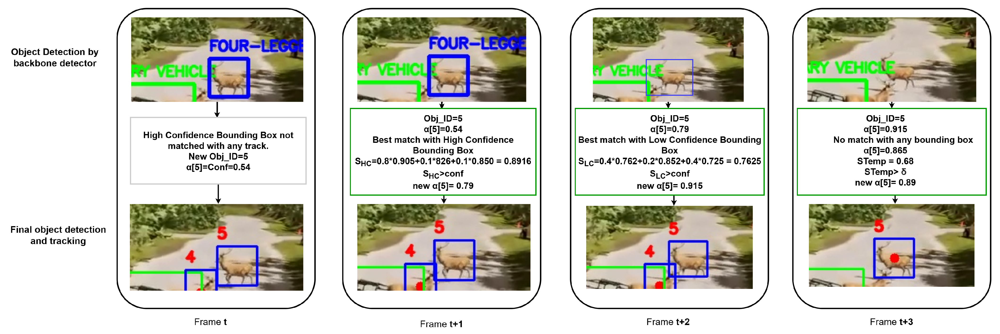

Projects
Research & Projects
Radar–Camera Fusion for Off-road Navigation
My ongoing research focuses on multimodal perception for off-road autonomous vehicles, combining a monocular camera and automotive radar to build BEV scene understanding and traversability maps. This includes hierarchical proposal-conditioned BEV segmentation and terrain classification for GNSS-free navigation.

Deep Semantic Segmentation Model and Dataset for Off-Road Terrain
I developed an off-road semantic segmentation dataset of 1,414 images by refining labels from the Yamaha–CMU Off-Road Dataset and augmenting synthetic samples to balance terrain classes. Building on this dataset, I designed a ResNet34–U-Net fusion architecture that achieves 87% accuracy at 24 Hz and generalizes strongly to YCOR, Rellis-3D, and RUGD benchmarks without fine-tuning. This demonstrates robust feature representations for diverse off-road environments and supports real-time traversability analysis for autonomous ground vehicles.

Predictive Enhancement of Detection (PrED)
I created PrED, a predictive enhancement algorithm that combines object detection with Kalman filtering and a Predictability Index to recover low-confidence and missed detections in data-limited scenarios. Integrated with camera-based detectors in moving off-road tests, PrED delivers an 11% improvement in detection accuracy and a 7% gain in MOTA, boosting temporal consistency and reliability of perception pipelines in challenging environments.

Physics-based Radar Sensor Modeling in Unreal Engine
I built a high-fidelity automotive radar sensor model in Unreal Engine using C++ that couples physics-based signal behavior with point cloud processing and 3D grid-DBSCAN clustering. The simulated sensor achieves 89% correlation with real radar measurements, enabling sim-to-real validation of perception and control algorithms and providing a controllable testbed for sensor fusion research.

Additional Work
- Real-time crop row detection using computer vision for agricultural robots (field-tested in maize cultivator prototypes).
- ROS/ROS2-based autonomy stacks integrating radar, camera, LiDAR, and IMU for ground vehicle navigation.
- Model optimization and benchmarking for embedded deployment and safety-aware perception (SOTIF-aligned workflows).